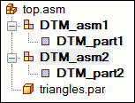
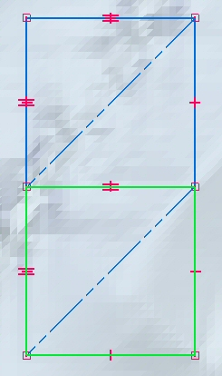
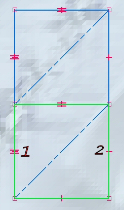

Use the Virtual Component Structure Editor to define the terrain models
The Virtual Component Structure Editor is used to define the extent of the terrain models. For more information on the Virtual Component Structure Editor, see the help topic Creating and publishing Virtual Components.
-
Choose Home tab→Assemble group→Component Structure Editor.
-
In the Virtual Component Structure Editor, set up a virtual assembly for each digital terrain model to be published.
Example:The example below shows two virtual parts, each contained in a virtual assembly. When published, the subassemblies each have a part document containing a solid body representing the digital terrain model.

-
In Assembly PathFinder:
-
Right-click the sketch, and then choose Edit Profile.
-
Right-click the first virtual assembly, and then click Edit Definition.
-
-
Select the lines representing the boundary of the terrain model, and then click Accept.

-
Orient the virtual component by clicking the origin (1) and the direction of the X-axis (2).

-
For each virtual assembly, repeat all of the above steps.
Note:Only the virtual assemblies must be positioned.
-
Close the sketch.